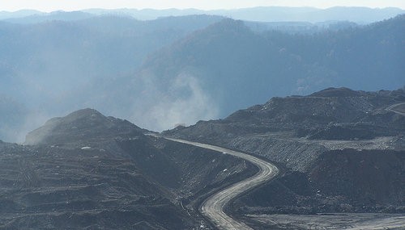

Businessmen and their corporations in the United States rig the world's oldest mountains with explosives completely destroying ancient ecosystems to extract an amount of coal that burns away in a few weeks time...
"
The topography and the hydrology of mountain top mined watersheds are radically altered—valley
contours are flattened and precipitation is routed through rock lined ditches on the surface or
percolates through fill material. Even after reclamation, the vegetation is dramatically different.
The alteration in topography persists forever and it will take centuries to reestablish the soils and forests that were historically present. The impacts of mountain top mining are more severe than other land use changes within these watersheds (e.g. clear cutting, residential development) because they are
immense in scale and lead to
irreversible alterations of watersheds."—
Mountaintop Mining Valley Fills and Aquatic Ecosystems
News
- June 25, 2009 U.S. Senate Subcommittee on Water and Wildlife
- The Impacts of Mountaintop Removal Coal Mining on Water Quality in Appalachia
- June 11, 2009 U.S. Environmental Protection Agency
- Interior and the Corps of Engineers agree to reduce environmental impacts of mountaintop coal mining in Appalachia
- March 25, 2009 U.S. Senate
- Appalachia Restoration Act S.696
Video
Help
